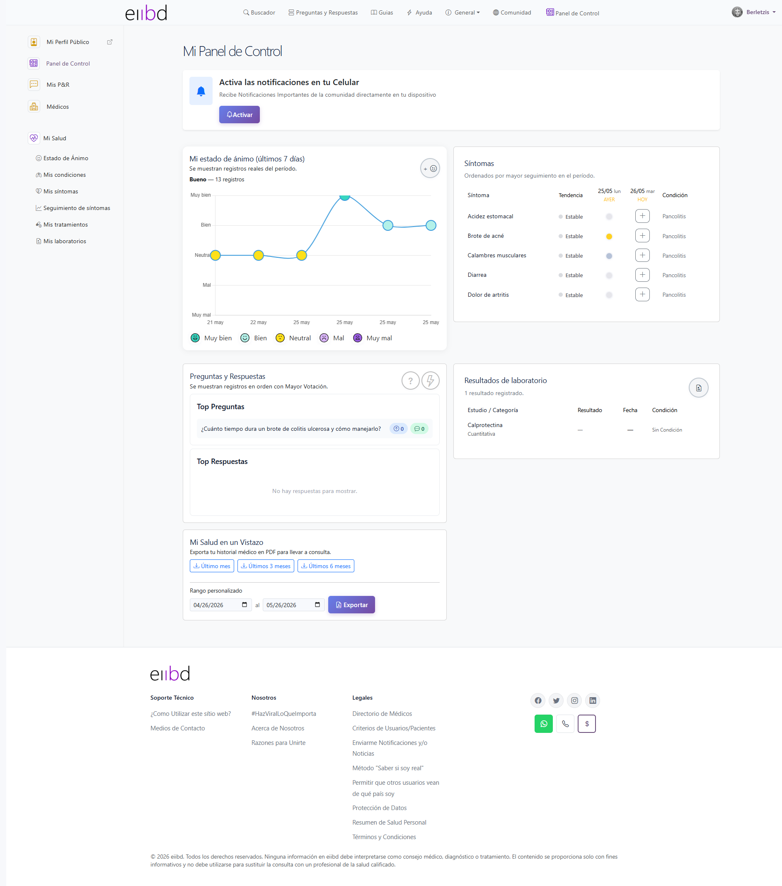
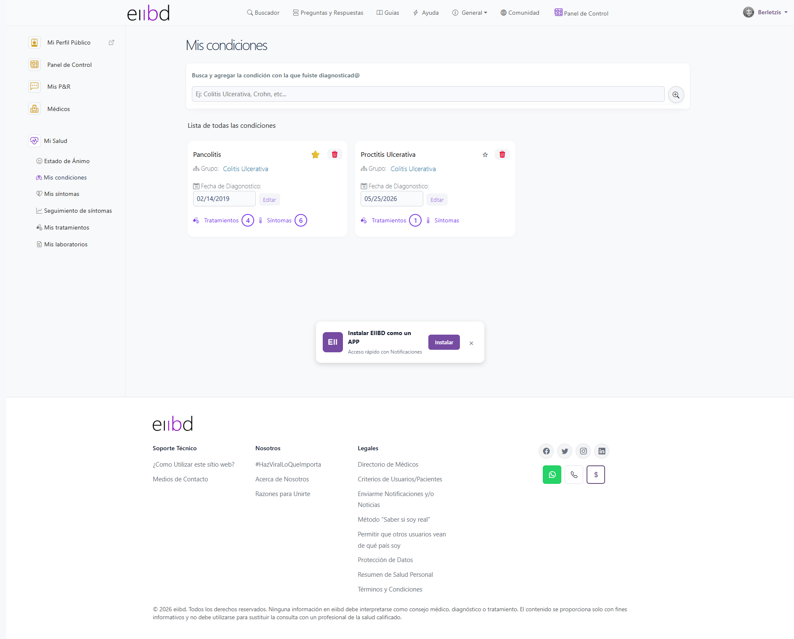
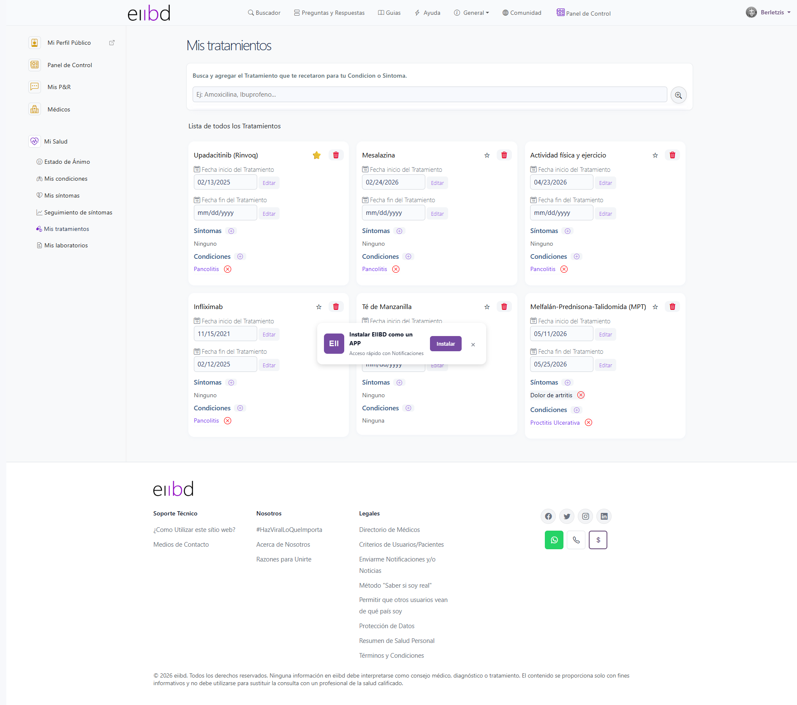
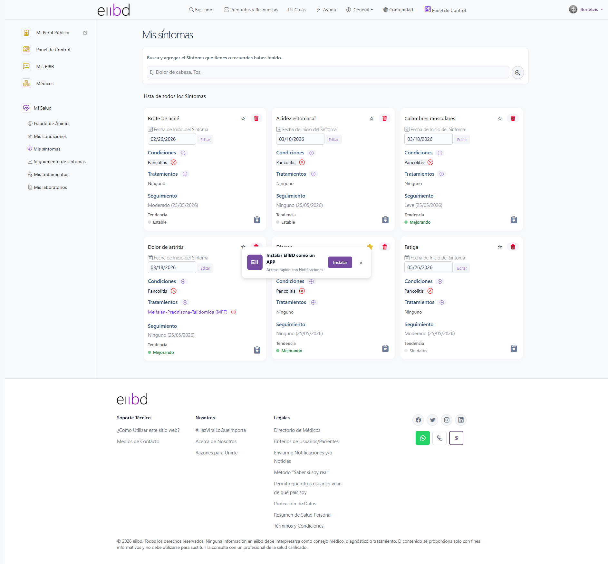
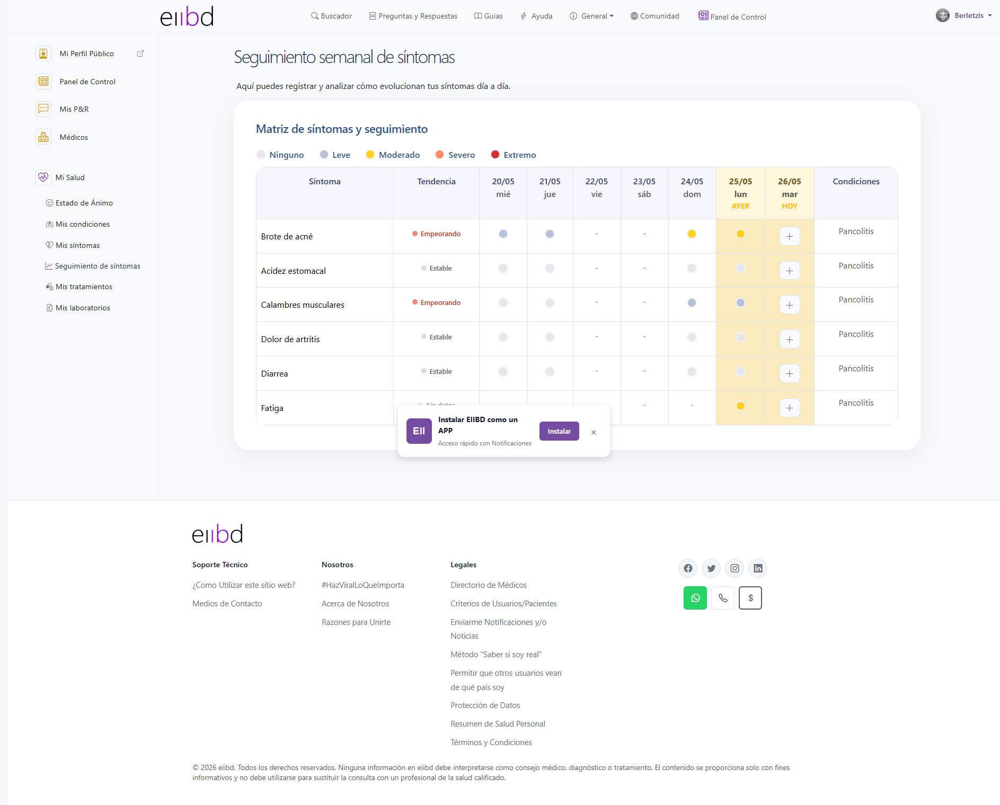
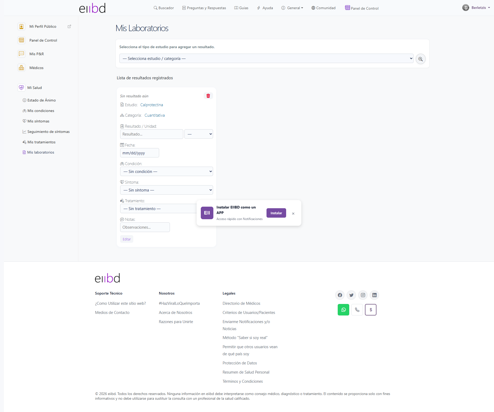
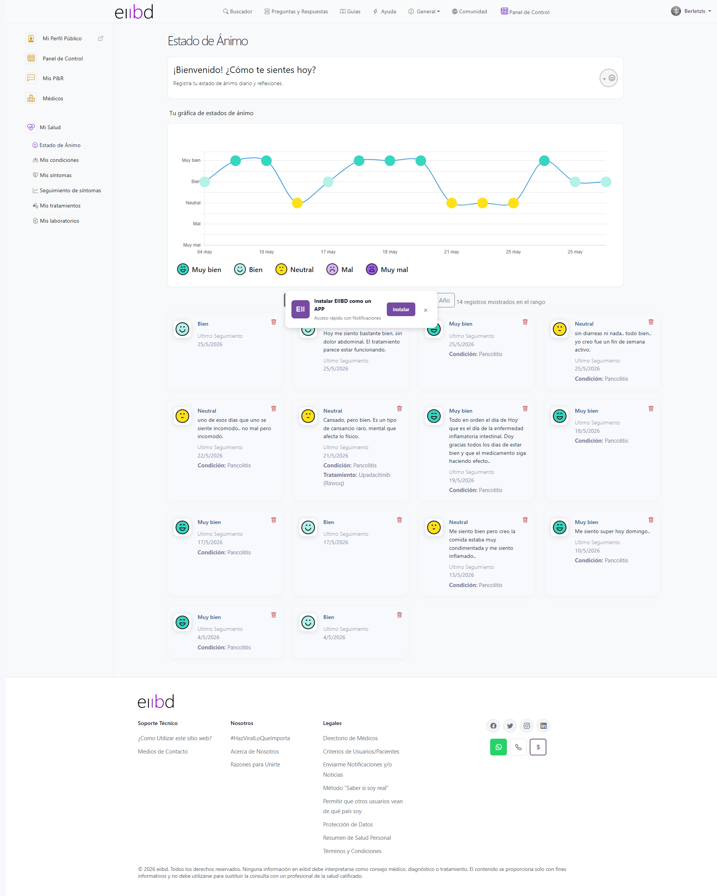
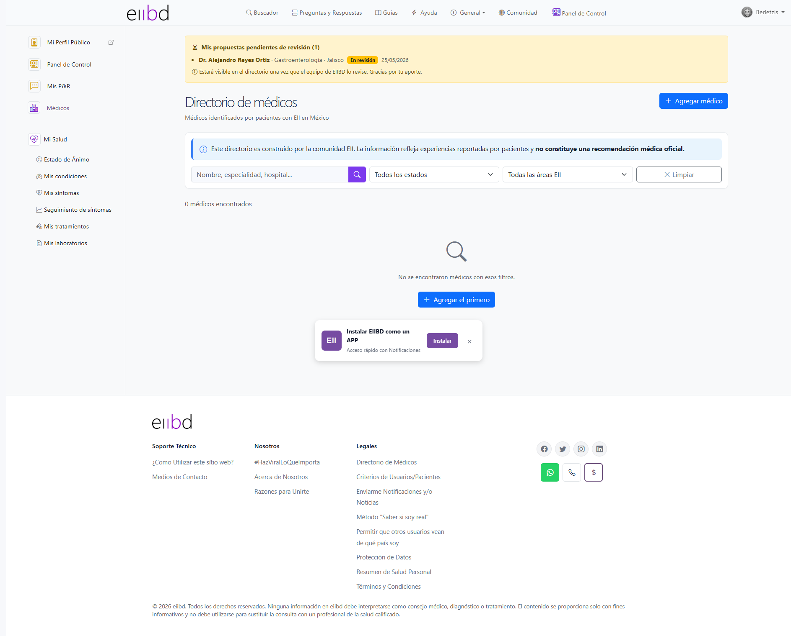
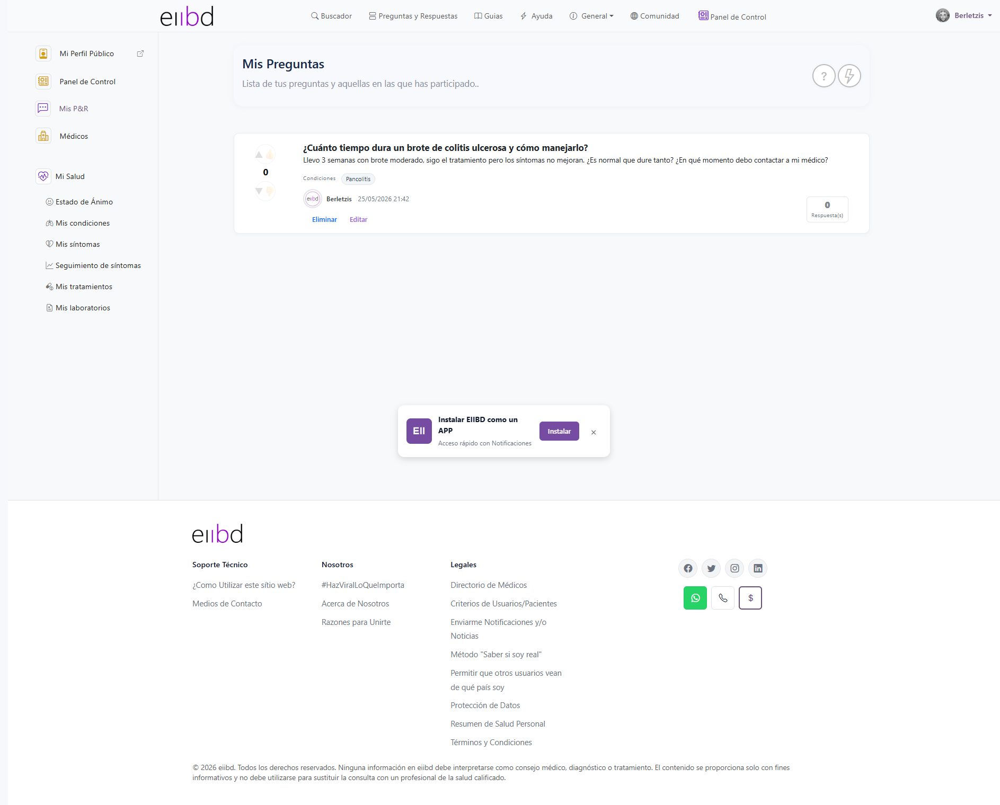
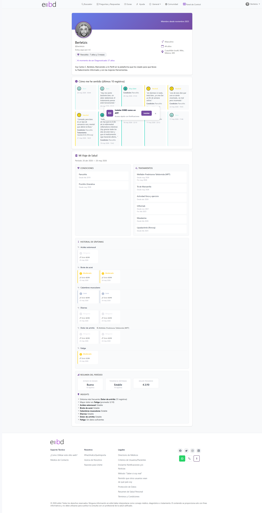

| Criterio | Observación | Estado |
|---|---|---|
| Agrupación lógica | "Mi Salud" agrupa bien los módulos clínicos. Separación clara de social (P&R, Médicos) vs. clínico | OK |
| Orden intuitivo | "Estado de Ánimo" antes de "Mis condiciones" — el estado de ánimo es secundario vs. las condiciones que son el núcleo. Orden cuestionable | WARN |
| Label "Mi Salud" | Es un texto no interactivo. Visualmente diferenciado, pero podría confundirse con ítem clickeable | WARN |
| Iconos | Todos los ítems tienen ícono Bootstrap Icons — consistente | OK |
| Item activo | Hay indicador visual del ítem activo en el sidebar — correcto | OK |
| Médicos → Link externo | "Médicos" redirige a /DirectorioMedicos (fuera del contexto /Identity). Rompe la coherencia de URL del panel | WARN |

| Criterio | Observación | Estado |
|---|---|---|
| KPIs / resumen | Dashboard muestra: Estado ánimo (7 días), Tabla síntomas, P&R top, Laboratorios, Exportar PDF. Buen coverage de módulos | OK |
| Banner push notifications | Card "Activa las notificaciones" con botón "Activar" aparece en la parte superior. Interrumpe el flujo antes de mostrar datos. Debería ser dismissible y no ocupar tanta jerarquía | WARN |
| Tabla síntomas | Columnas: Síntoma / Tendencia / AYER / HOY / Condición. Funcional, pero "AYER" y "HOY" como etiquetas dentro del header son confusas — el header mezcla fecha (25/05) con etiqueta semántica (AYER) | WARN |
| Botón "Agregar seguimiento hoy" | Presente en cada fila de la tabla — bien accesible. Pero el texto es largo para una celda de tabla | WARN |
| Card P&R | "Top Respuestas: No hay respuestas para mostrar" — estado vacío pobre, sin CTA para responder | CRIT |
| Card laboratorios | Muestra "—" en resultado y fecha para Calprotectina. No comunica si el dato falta o es normal | WARN |
| Exportar PDF | Links "Último mes / 3 meses / 6 meses" + rango personalizado. Muy funcional y bien diseñado | OK |
| Scroll vertical | Dashboard requiere mucho scroll. La gráfica de ánimo está arriba, pero la tabla síntomas y laboratorios quedan below the fold | WARN |
| Densidad | Mezcla de cards de distintos tamaños y proporciones. Sin grid system consistente entre secciones del dashboard | CRIT |

| Criterio | Observación | Estado |
|---|---|---|
| Listado condiciones | Condiciones registradas visibles con botones de acción. Layout tabular claro | OK |
| Formulario agregar | Autocomplete para buscar condición — correcto, evita texto libre libre | OK |
| Mensajes de feedback | No confirmado en esta captura si hay toast/snackbar al guardar | INFO |
| Espaciados formulario | Inputs con padding 6px 12px — Bootstrap estándar. Consistente | OK |

| Criterio | Observación | Estado |
|---|---|---|
| Estructura visual | Similar a Condiciones y Síntomas — template reutilizado. Positivo para consistencia | OK |
| Campo FechaFin | Tratamientos con FechaFin implementada (sesión anterior). Visible en UI | OK |
| Botones acción | Editar / Eliminar / Guardar — consistentes con el resto del módulo Mi Salud | OK |

| Criterio | Observación | Estado |
|---|---|---|
| Lista síntomas | Síntomas listados con condición relacionada. Estructura clara | OK |
| Relación síntoma-condición | Cada síntoma muestra la condición a la que pertenece (ej. "Pancolitis") — excelente para contexto médico | OK |
| Botón agregar síntoma | CTA presente. Autocomplete esperado para buscar síntoma | OK |

| Criterio | Observación | Estado |
|---|---|---|
| Comprensión del módulo | Seguimiento diario de intensidad por síntoma. Concepto claro y valioso para pacientes EII | OK |
| Selector de intensidad | Escala Ninguno/Leve/Moderado/Severo — nomenclatura clínica apropiada | OK |
| Gráficas de tendencia | Visible en dashboard. Aquí en el módulo propio, la visualización de progreso histórico es el elemento clave | OK |
| Feedback al guardar | Botón "Agregar seguimiento hoy" en el dashboard tiene texto largo — en móvil puede truncarse | WARN |

| Criterio | Observación | Estado |
|---|---|---|
| Tabla de resultados | Columnas Estudio / Categoría / Resultado / Fecha / Condición — completa | OK |
| Dato "—" en resultado | Cuando resultado o fecha están vacíos muestra "—". Aceptable pero podría mostrar un badge "Pendiente" o "Sin dato" más informativo | WARN |
| Interpretación de resultado | No hay rango normal ni indicador visual (↑↓ fuera de rango). El paciente ve el número pero no sabe si es normal | CRIT |

| Criterio | Observación | Estado |
|---|---|---|
| Opciones de ánimo | 5 opciones: Muy bien / Bien / Neutral / Mal / Muy mal. Con íconos faciales emoji-like. Inmediatamente comprensible | OK |
| Consistencia botones ánimo | Usan .btn.btn-outline-secondary — mismo estilo para las 5 opciones. Sin distinción de color por emoción | WARN |
| Historial / gráfica | La gráfica de 7 días aparece en el dashboard pero no confirmado si aparece también en este módulo propio | INFO |

| Criterio | Observación | Estado |
|---|---|---|
| Cards de médico | Foto + nombre + especialidad + país. Estructura de card médica clara y confiable | OK |
| Filtros | Filtros por país/especialidad presentes. Buena usabilidad para directorio | OK |
| Confianza | Badges de verificación presentes. El usuario sabe qué médicos están verificados | OK |
| CTA proponer médico | Botón para proponer médico visible. Incentiva participación comunitaria | OK |
| Densidad de cards | Grid adecuado. No hay overcrowding | OK |

| Criterio | Observación | Estado |
|---|---|---|
| Separación preguntas / respuestas | Tabs o secciones separadas para "Top Preguntas" y "Top Respuestas" — correcto | OK |
| Estado vacío respuestas | "No hay respuestas para mostrar" sin CTA — igual que en el dashboard. Estado pobre | CRIT |
| Console error | La página tiene 1 error en consola — posible JS roto o recurso no encontrado | WARN |

| Criterio | Observación | Estado |
|---|---|---|
| Presentación | Foto de perfil + nombre + rol (Fundador EIIBD) + descripción. Estructura limpia | OK |
| Legibilidad | Tipografía clara. Jerarquía nombre → rol → descripción correcta | OK |
| Espaciados | Padding interno del perfil razonable. No se perciben gaps excesivos | OK |
| Consistencia con diseño global | Usa los mismos componentes del sitio. Coherente con la identidad visual | OK |
| Privacy | Controles de privacidad no son visibles desde el perfil público (correcto — van en settings) | OK |